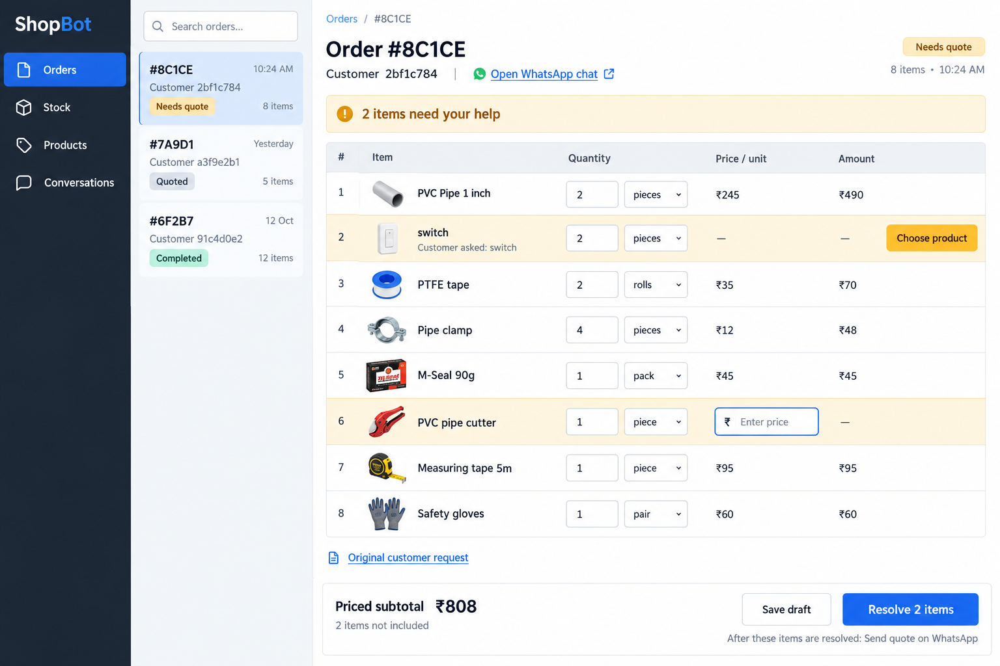
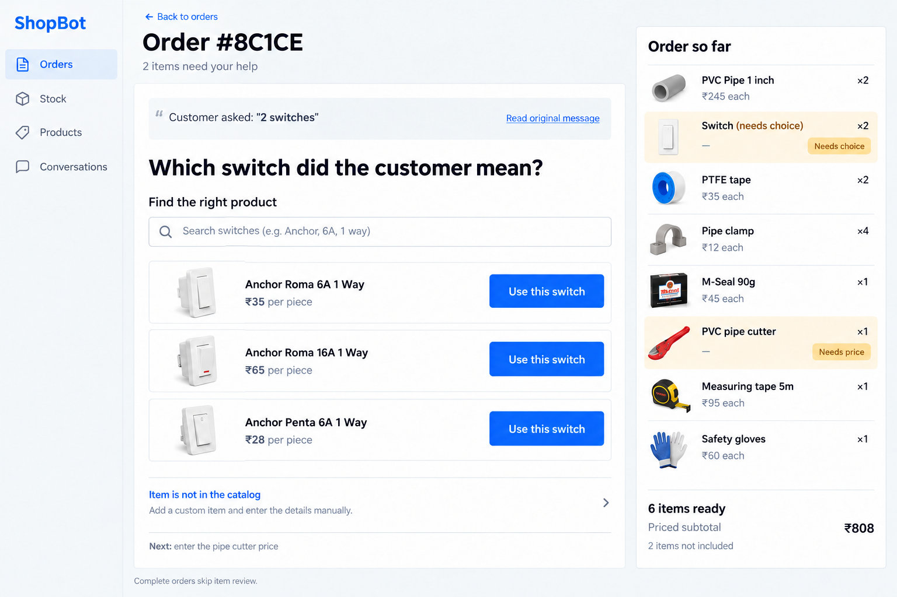
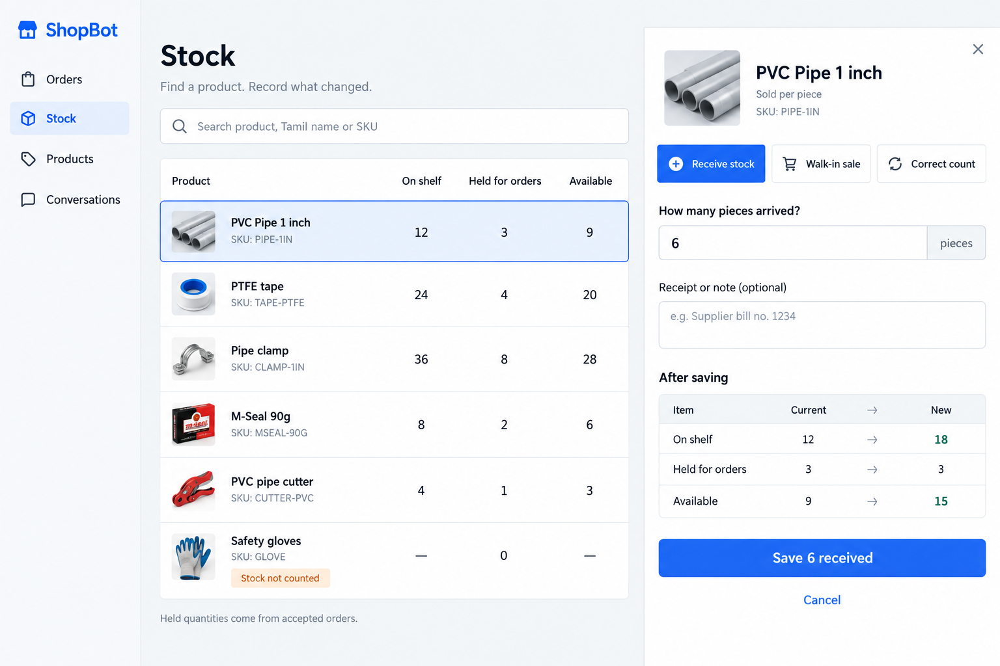

See the order. Fix the two missing decisions. Send the quote.
Keep known facts readable, put the required correction directly beside its item, and keep the main action visible at the bottom. Long items and order lists scroll independently while the application stays within the window. Once the customer approves, the page becomes a packing list.

One unresolved item at a time.
Start with the ambiguous switch, then ask for the missing cutter price. Completed items remain visible. This reduces scanning, but adds navigation when an experienced owner wants to price many items.

Record what changed without editing the product.
Choose Receive stock, Walk-in sale or Correct count. See the result before saving. On shelf includes items held for orders; held quantities are calculated from those orders.

Judge the effort of finishing a task.
The prototype has passed interaction and arithmetic checks. That does not establish that it is easy to use. Try these without reading instructions inside the app:
- Finish the eight-item quote: choose the ₹35 switch and enter ₹180 for the cutter. The complete total should be ₹1,058.
- Send the demo quote, then use the separate “Customer approves (demo)” control. Accept the order, prepare it and record collection.
- Reset the demo, open Stock and receive 6 PVC pipes. Check that the preview is 18 on shelf, 3 held and 15 available.
- Use Correct count to record 14 on shelf. Check that held stock stays 3 and available stock becomes 11.
The useful feedback is where you hesitate, cannot find the next action, or need a step that is missing.